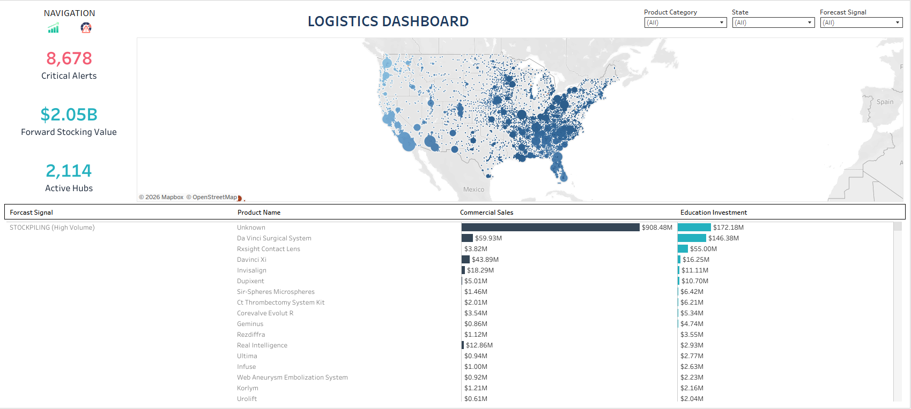
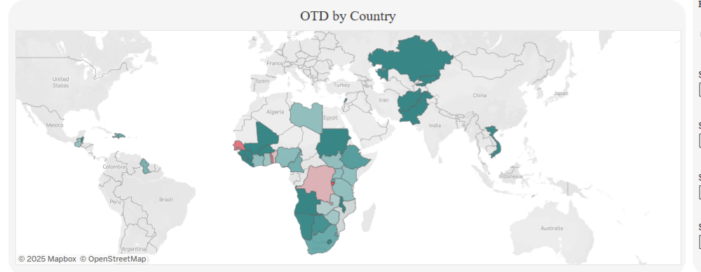
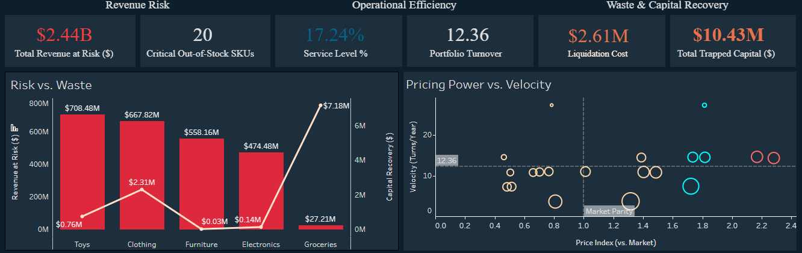
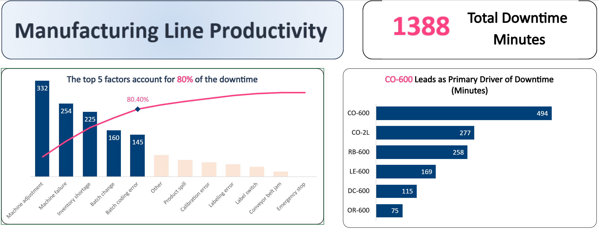
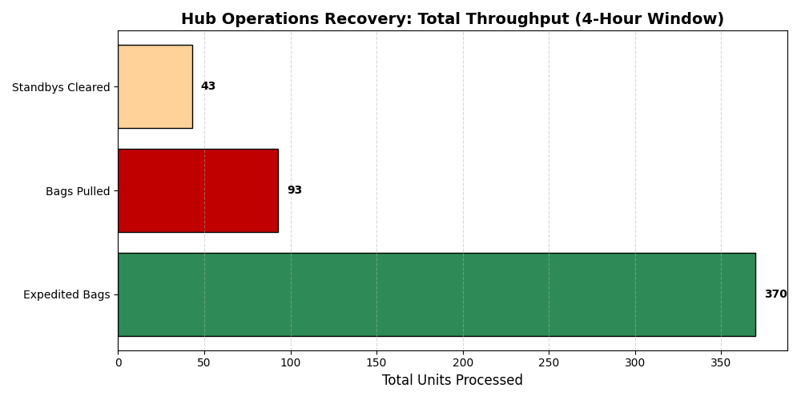
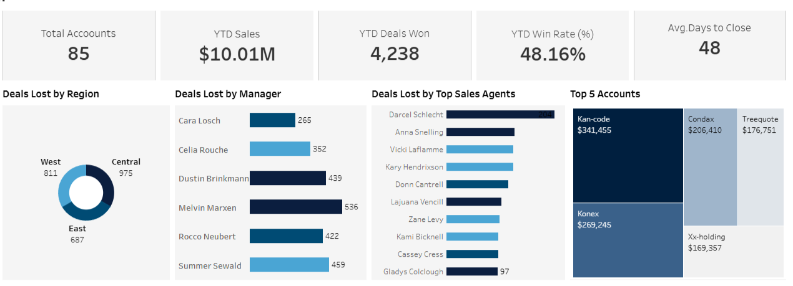
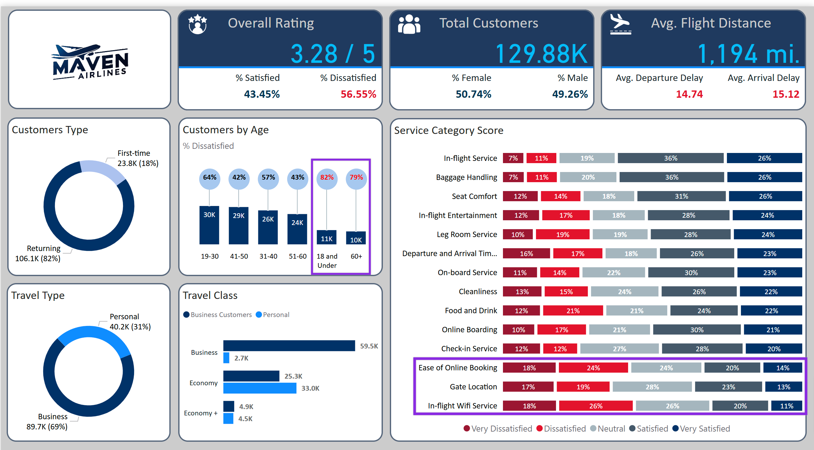
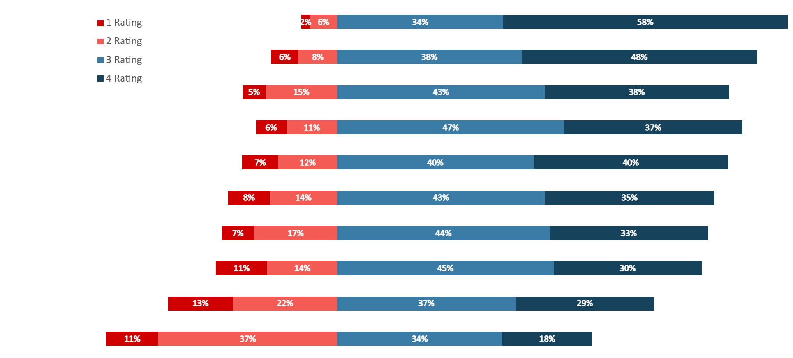

Technical Case Studies
> A repository of operational analysis, supply chain optimizations, and data-driven decision support systems.
Operations, Logistics & Supply Chain

Healthcare Payments Compliance & Spend Analyticss
Star Schema architecture translating 15.4M data points into narratives. Uncovered $11.7M in supply chain risk.

Global Health Supply Chain Optimization
Interactive intelligence identifying drivers for 99% of logistics spend. Integrated Python for lead-time analysis.

Inventory Capital Optimizer
ML-driven demand forecasting protecting $2.44B in revenue leakage while releasing $10.43M in trapped capital.
Inventory Margin Optimization
Strategic GMROI matrix analysis using advanced SQL to categorize menu efficiency and eliminate throughput bottlenecks.

Production Throughput Model
Pareto analysis of bottling line downtime. Utilized Power Query for ETL and isolated root causes for shortages.

Hub Operations Integrity
Digital Twin simulation identifying $122K in net savings by optimizing gate hold vs. push decisions under FAA regulatory constraints.
Systems, Performance & Special Projects

Revenue Pipeline Control
Engineering high-fidelity monitors to optimize conversion cycles and agent performance. Visual CRM intelligence.

Service Quality Analytics
Translating airline survey data into actionable service enhancements through Power BI segmentation and sentiment analysis.
Retention Modeling & Ops
ML pipeline developed to mitigate revenue loss through proactive retention strategies and churn prediction.

Workforce Capacity Planning
Cleaning and categorizing workforce sentiment data for strategic HR decision-making using Power Query.